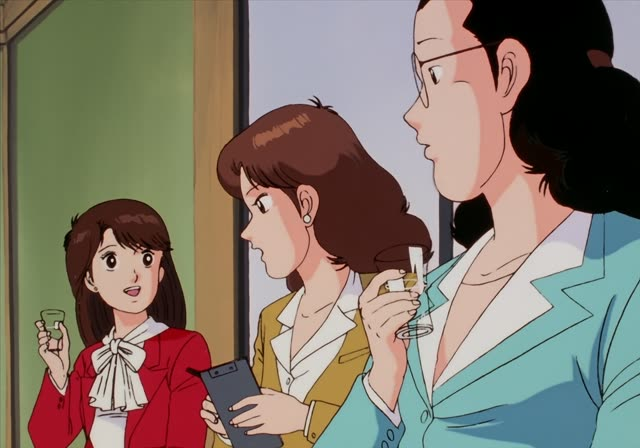
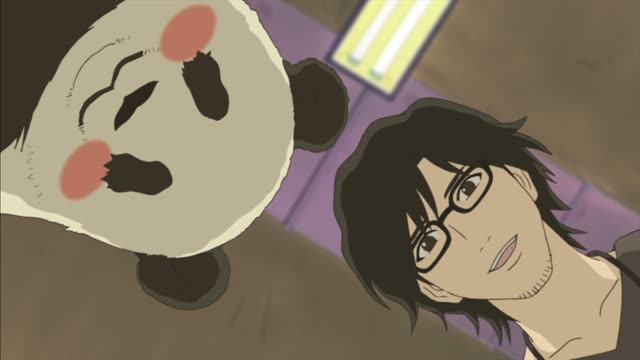
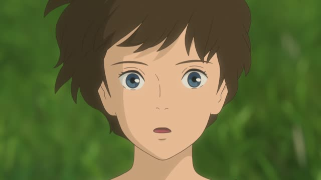
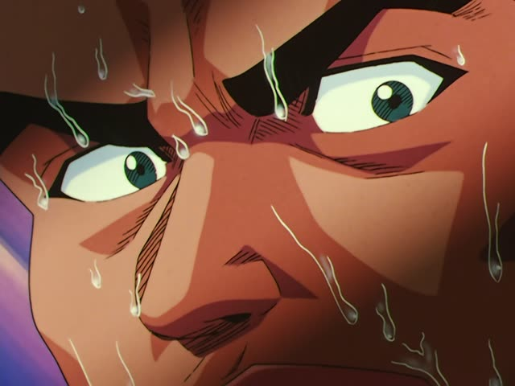

～がする
| Polite | ～がします |
|---|---|
| Casual | ～がする |
Same meaning: "there's a smell, a sound, a feeling". Only the politeness changes.
Kekkon Dekinai Otoko · Episode 2
違う気がします
"I feel like that's not it."
～がする is for things that reach you through your senses: 匂いがする (there's a smell), 音がする (there's a sound), 味がする (it tastes of...), 気がする (I have a feeling). You don't do anything, it just comes to you.
It goes after a noun with が. 気がする can follow a whole sentence: 違う気がする, "I feel it's wrong". On this card, she disagrees gently: 気がします makes it a feeling, not a hard no.
気がする is a soft way to give your opinion: "I feel like...".
Good Morning Call · Episode 4
いい匂いがする
"Something smells good."
On this card, she smells the ramen he's cooking. Japanese doesn't say "it smells": there IS a smell, 匂いがする.
Quick Examples
You hear something outside at night.
外で変な音がする。
"There's a strange noise outside."
CasualTasting a friend's soup.
これ、少しレモンの味がしますね。
"This tastes a little of lemon."
PoliteThe morning of an exam.
今日はうまくいく気がする。
"I have a feeling today will go well."
気がする after a whole sentence.
CasualWith and without
違います。
That's wrong. A hard no.
違う気がします。
I feel like that's wrong. Softer, just your feeling.
Examples from Media

Oishinbo · Episode 1
いくぶんしょっぱい 気がするんですが
"I feel this one is a bit salty."
After an い-adjective: しょっぱい気がする.
Samurai Champloo · Episode 2
そんな気がします
"I have that feeling."
そんな気がする: "I have a feeling", very common.
Quartet · Episode 3
守られてる気がしました
"I felt protected."
Past: がしました.

Shirokuma Cafe · Episode 28
そうですね… 若干 疲れている気がします
"Let's see... he seems a little tired, I think."
Dungeon Meshi · Episode 15
んっ？ 何か甘い匂いがする
"Hm? Something smells sweet."
何か: something.

When Marnie Was There
あのお屋敷 知ってる気がする
"I feel like I know that mansion."
1 Litre of Tears · Episode 11
冬の匂いがした
"It smelled like winter."
Past: がした. From Aya's diary.

Slam Dunk · Episode 69
テーピングが 緩い気がする
"I feel like the taping is loose."